One job: turn a website visitor into a booked consultation, then make sure they actually show up — without anyone at the clinic touching a keyboard. Below is the entire system, shown from inside the real GHL account.
A local dental clinic's website usually describes services and hopes people call. Leads fill out a form and wait. Calls go unanswered during procedures. Nobody follows up on no-shows. Each of those moments is a patient quietly choosing another clinic. This build closes every one of those gaps with automation.
The pipeline mirrors how a clinic actually works — and every stage change fires its own automation, so moving a card is the work.
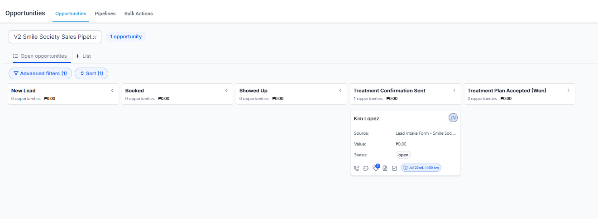
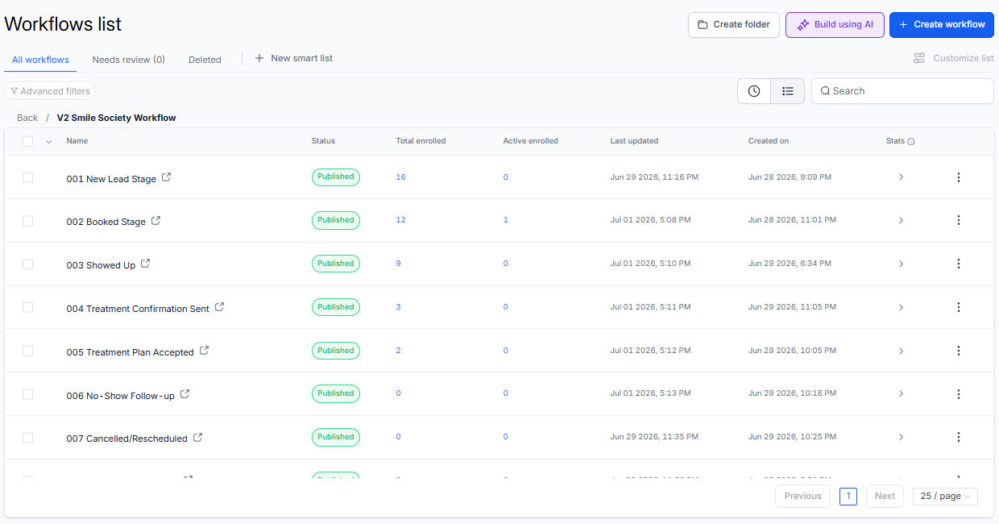
The moment the intake form is submitted, the system checks whether this contact already exists, creates or updates the opportunity, tags them, notifies the clinic, and sends the confirmation email with the booking link — then waits one hour and nudges anyone who hasn't booked. The lead never sits untouched.
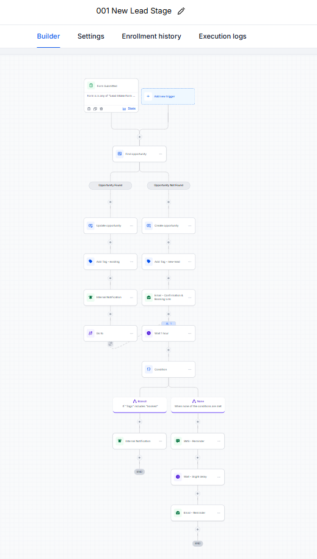
A missed call triggers an instant SMS — with different messages during and after business hours — then waits 30 minutes for a reply. If the lead replies, they're tagged engaged and sent the booking link; if not, the clinic gets an internal task to follow up. A ringing phone during a procedure stops costing patients.
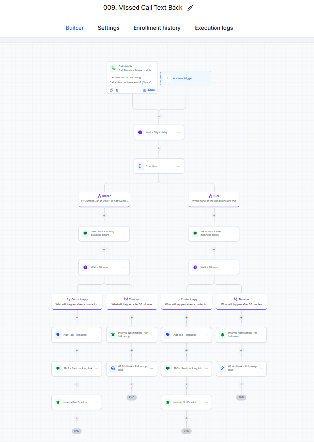
Booking an appointment enrolls the patient in a reminder ladder: instant confirmation, then SMS + email the day before, then SMS + email shortly before the visit. No-show prevention runs on rails instead of on the receptionist's memory.
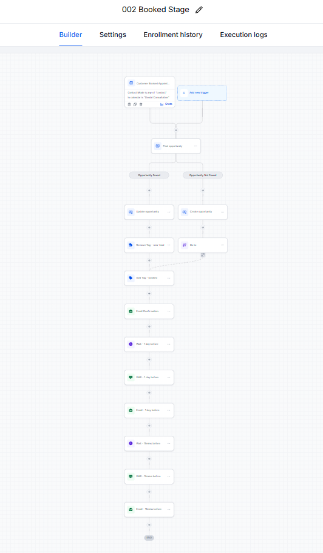
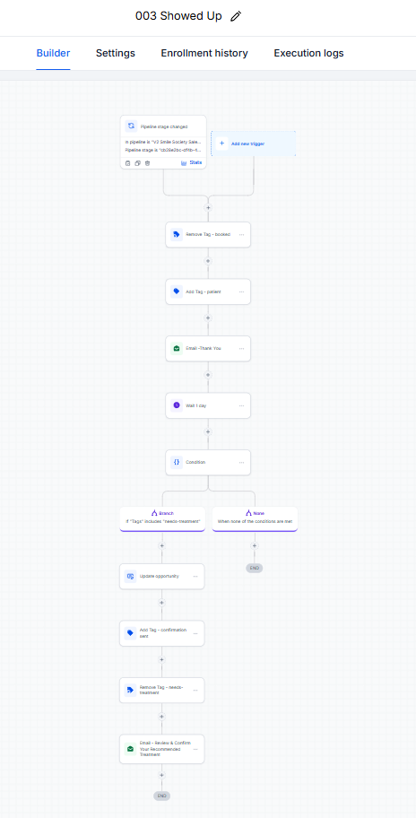
Thank-you email, patient tagging, and needs-treatment routing after the visit.
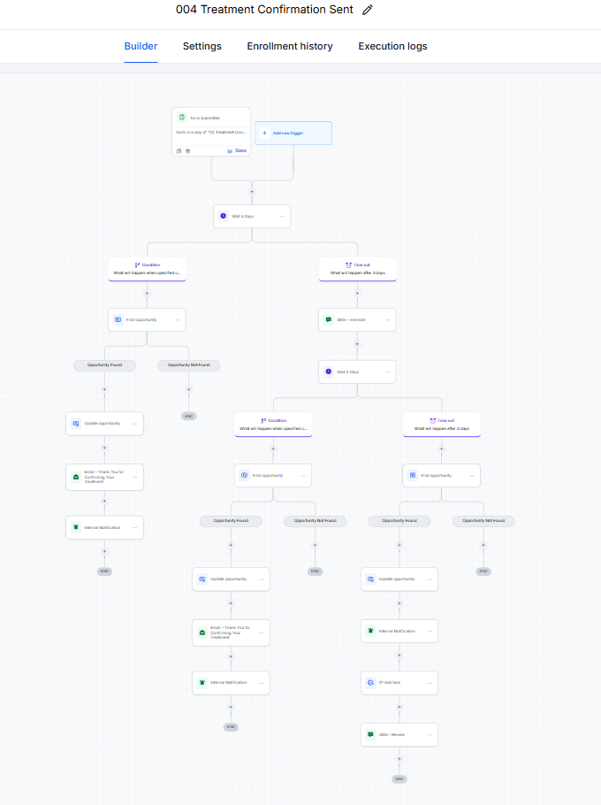
Multi-day confirmation sequence with condition and timeout branches for quiet patients.
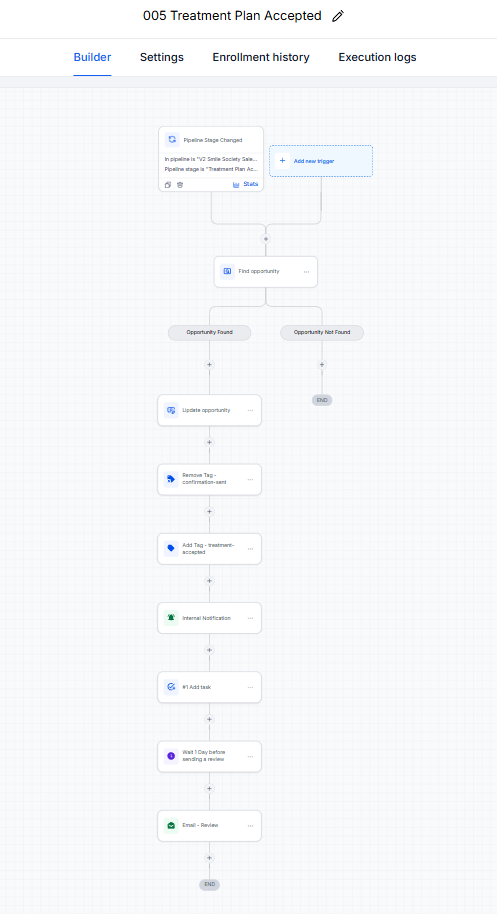
Tag swap, internal notification and task, then an automated review request a day later.
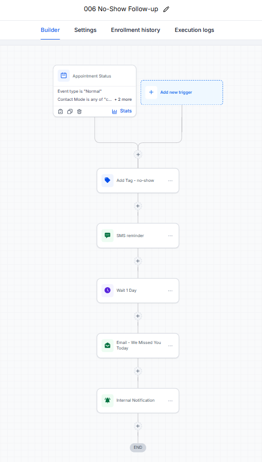
Immediate rebooking SMS, then a "we missed you" email a day later. No-shows get rescued, not forgotten.
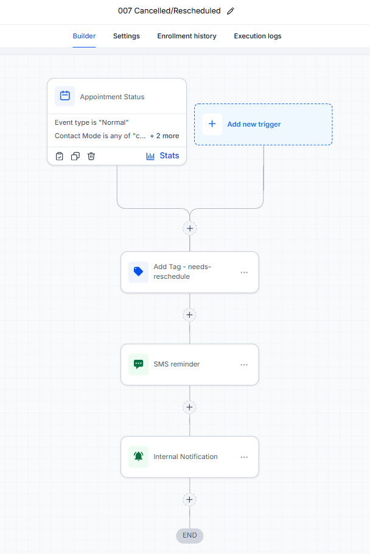
Needs-reschedule tagging, SMS nudge, and an internal heads-up the moment plans change.
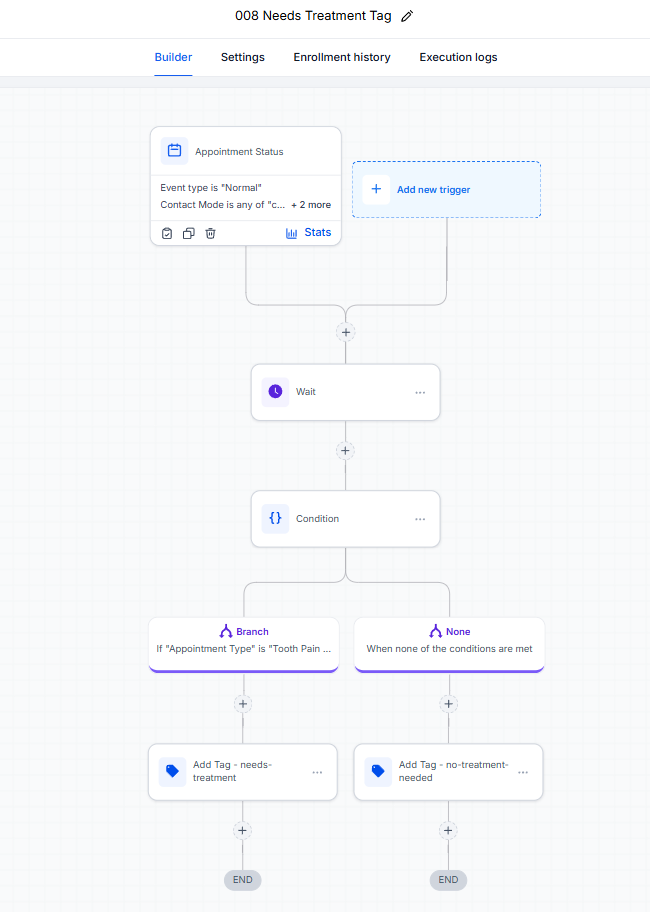
Routes each appointment type to the right follow-up path with automatic tagging.
Every email and SMS in the system is written and personalized with contact fields — here's the confirmation email from workflow 001, exactly as it lives in the builder.
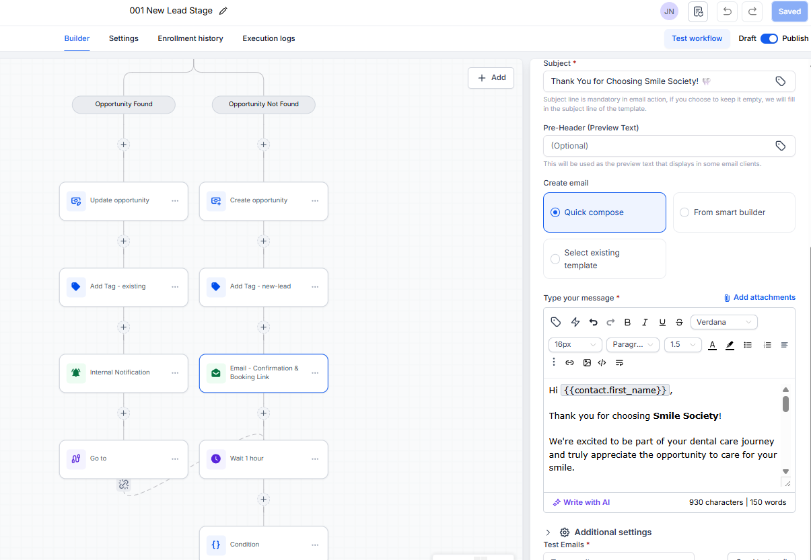
This structure adapts to any appointment-driven business: clinics, home services, agencies, coaches. We map yours on a free call.
Book a free call →